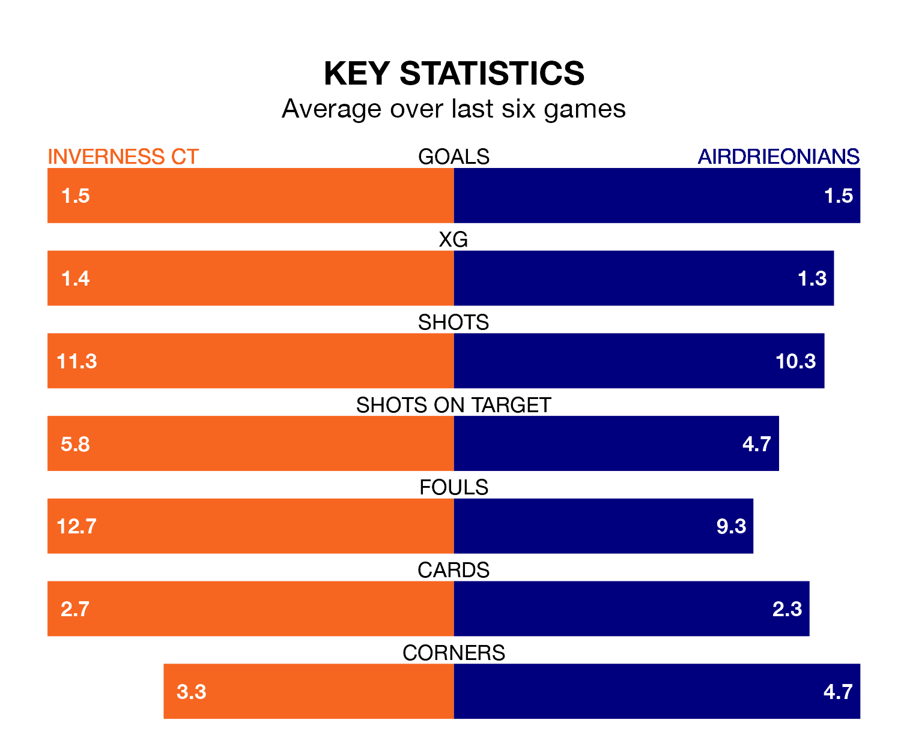

Struggling Inverness CT face Airdrieonians at the Tulloch Caledonian Stadium on Saturday looking to build on a win in their last league outing.
After securing all three points with a 2-0 victory over Greenock Morton on March 2, ICT sit ninth in the Championship.
They travel to play an Airdrieonians side fifth in the standings, who also won their last match, 2-0 against Dunfermline Athletic, on Tuesday.
In Joshua Rae, Airdrieonians can rely on one of the league's safest pair of hands. He has kept eight clean sheets in his 25 appearances this season, and only one other 'keeper – Dundee United's Jack Walton – has been able to prevent the opposition scoring on more occasions in the Championship.
In Inverness CT's net, Mark Ridgers has five clean sheets in 27 games. He has conceded a goal every 81 minutes, 10% more often than the 87 minutes between goals for Rae.
With 28 goals in 26 games so far this season, the visitors are the league's joint-second-lowest scorers with 1.1 goals per game. But they are conceding fewer than average too, letting in 30 goals at a rate of 1.2 per game.
ICT are also below average scorers, with 1.2 goals per game, compared to a league average of 1.4. They have also conceded 1.2 goals per game.
In the last five years, Inverness CT and Airdrieonians have played each other on four occasions. Inverness CT won one of them and Airdrieonians the other.
On average, ICT scored 1.0 goal and Airdrieonians 1.8 in those matches.
Their last meeting was on January 2, when Airdrieonians won 2-0 at home.
The home side are in mixed form in the Championship, with two wins and three draws from their last six games.
With two wins and two draws over that period, Airdrieonians's form is slightly worse – they have taken eight points from 18, compared to Inverness CT's nine.
Updated: 09:34 (UTC), 08/03/24